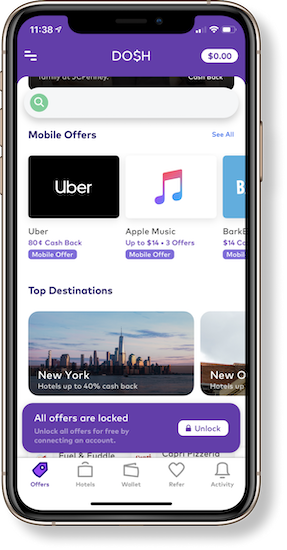

Card-linked offers (CLO's) on debit cards were introduced by PNC, as a way for merchants to market themselves and consumers to save money. However, these offers did not gain traction amongst bank customers. Our team was asked to explore the CLO space to discover unmet needs of the consumers and develop metrics to measure value of CLO's for merchants.
As they currently exist card linked offers (CLO’s) have two major issues:
They have low traction with consumers.
Merchants aren’t receiving meaningful metrics from these CLO’s.
Client
Our client numo is a child company of PNC, a bank based out of Pittsburgh. numo acts as a fintech incubator: they look to solve unrealized problems in finance and build innovative solutions for them using emerging technologies.
My Role
In our team I served as the Product Lead and helped guide our team’s vision for our final product. I contributed equally to research and testing. As Product Lead I developed our unique value propositions, and during the design phase I led the design of our consumer app.
Solution
After extensive research, ideation, testing, and redesign, we created a two part solution to address both our stakeholders. The merchant side focuses on the creation and control of CLO’s as well as the metrics specific to these CLO’s and a consumer side focused on sending and receiving deals.
Mercury is a tool for small local merchants that allows them to use CLO’s to market themselves more efficiently to their preferred market segments. They can see actionable metrics and insights allowing them to adjust their marketing techniques.
As result the CLO’s consumers receive are more targeted to them directly- and fit their natural shopping behavior. The consumer app not only allows for users to send and receive these deals but discover new businesses and form a community supporting local businesses.
What is a CLO?
In short Card-linked offers (CLO’s) are deals that can be redeemed with the use of a card. The user signs up for a network that offers these deals, and links their card. In this way, they are able to receive the deal automatically, usually as cash back. Although most people have never heard of CLO’s, they are the second most popular advertising channel with $1-10 billion in sales linked to CLO’s. CLO’s are offered through two mediums: banking (such as PNC) and what are known as publisher apps (Dosh, Rakuten, Pei, etc.).
Current CLO's
Bank CLO's
Bank offers must be activated before they can be applied to the user’s purchase.
Banks offer limited deals, with an expiration date of about 2 weeks from activation.
Users save money in the form of cash back which averages around 5%.
B2B (business-to-business) companies like Cardlytics, partner with banking institutions to act as a middle man between banks and merchants.

Publisher CLO's
Publisher apps automatically grant cash back deals for attached credit/debit cards.
Users have access to all deals, and these deals have no expiration date.
On Dosh the average cash back is 2-3%.
Publisher apps either have direct connections to merchants or access them through partnerships with rewards programs like Internation Hotels Group or Rewards Network.
Stakeholders
Based off of our background research and what we learned from numo, we created a stakeholder diagram to help us better understand the ecosystem in which CLO’s existed in. In it we have PNC and publishers as the companies offering CLO’s, and Cardlytics as the middleman for PNC. In orange we have highlights our two main stakeholders:
Merchants: These are business owners who leverage CLO’s as a form of marketing. They want to attract more customers with deals.
Consumers: These are individuals who use CLO’s to get deals on their purchases.
Consumer Research
To better understand our users we carried out an intensive set of research that involved guerilla semi-structured interviews, booth interviews using TAP (Think Aloud Protocol), surveys, and interviews. We came away with many insights into consumer motivations and behaviors in regards to CLO’s and I’ve highlighted the most important below.
Insights
Deals can be viewed as a way to manipulate consumer spending, rather than saving money.
Immediate and significant value must be shown to users in order for them to utilize CLO apps.
Offers need to be personalized in order for people to take advantage of them. Users want offers that fit their lifestyles.
However, security and privacy are important concerns for consumers when adopting new tech.
Value created must exceed effort spent for consumers to implement CLOs more. Users of CLO apps saw obtaining deals as a tradeoff between time/effort and money and their experience with an app was judged by this standard.
For those that used PNC, none of them really used the offers- they thought the bank CLO's were irrelevant or too much effort.
Merchant Research
We used a variety of methods to learn more about one of our primary stakeholders: the merchant. We also chose to focus on smaller merchants as they are underrepresented and have the most to gain in the CLO space, and stand to gain the most from optimized CLO programs. The methodologies we used to gain a deeper understanding of merchants were semi-structured interviews with merchants , including an interview with a super-merchant (a merchant with extensive experience in marketing).
Insights
Merchants need a way to calculate value of marketing using CLOs. They do not trust the existing reports by rewards programs and believe that they take credit of their returning customers.
POS (Point of Sale) systems can potentially help merchants gain trust in rewards programs.
Some local merchants are struggling to compete with online retail giants like Amazon.
Merchants want more control over where their business is advertised.
Symbiotic partnerships with other local businesses targeting similar customer segments is one preferred way for marketing.
Ideating
Our first step in the design process was ideation. We had to take the insights we had synthesized from our consumer and merchant testings and develop them into a product that would address each stakeholders pain-points. We did several rounds of ideating to take our findings and turn them into potential ideas and features.
Ideation Process
Crazy 8’s: We did several rounds of crazy 8’s- an activity where members think of the most “out there” ideas based on findings.
Data Flows: Because our problem involved delivering meaningful metric to merchants, we created data to flow to explore how we could use CLO’s and CLO technology to offer unique data to merchants that they wouldn’t be able to get from their POS.
Mashup Activity: Additionally we did a mashup activity, where we thought of different problems, mediums, tools, etc, and mixed them up to inspire new ideas.
To test our many ideas for both of our stakeholders we wrote scenarios for the ideas we generated and liked. We then drew storyboards for each of these scenarios, which we tested with merchants and consumers to see which of these ideas resonated or evoked a response.
Ideation Process
Crazy 8’s: We did several rounds of crazy 8’s- an activity where members think of the most “out there” ideas based on findings.
Data Flows: Because our problem involved delivering meaningful metric to merchants, we created data to flow to explore how we could use CLO’s and CLO technology to offer unique data to merchants that they wouldn’t be able to get from their POS.
Mashup Activity: Additionally we did a mashup activity, where we thought of different problems, mediums, tools, etc, and mixed them up to inspire new ideas.
Merchant Interviews
Additionally, we conducted interview with merchants to determine what power they wanted to have over CLO’s and what type of deals they preferred as well as what type of metrics they wanted to see. We showed them some low fidelity samples of potential metrics as well as asked questions regarding what types of deals they would want to offer and to whom.
Findings
Merchants wanted to have full control over the deals they offered.
Merchants had unique wants for deals they offered- meaning deals had to be customizable to an extent.
Merchant were interested in this unique data: traffic, top list information, items vs return customers, and demographic info.
Iterative Design Process
From our merchant interviews, storyboard testing, and ideating we had finally settled on the ideas we wanted to create. It was now time to start designing. We did several cycles of design-testing-and iteration for each of our products.
Design Process
Based on our storyboarding we picked out several features we knew noticed evoked interest from interviewees and we individually created sketches of these features.
From these sketches we picked out different screens and created low fidelity wireframes in Figma.
We tested these screens with users to see which features they were most and least interested in. Based off of their responses we narrowed down the functionality of our consumer app. We found that users were especially interested in a social aspect.
We then took the idea to mid-fidelity, building out more screens and making it interactive.
Because the metrics on our merchant product is limited by the functionality of the consumer app, once we had committed to our final features for the consumer app, we started developing the mid-fidelity wireframes for the merchant.
From here we conducted two rounds more rounds of design, testing, and iteration. Each time we analyzed the feedback, determined what updates/changes were needed, and redesigned accordingly, going up in fidelity each iteration.
Its been 8 months since we started this project. As a team we have conducted intensive research, done many types of ideating, done several rounds of prototyping, testing, and iterating. We are proud of all the hard work we have put in, and our final product Mercury, named after the Roman god of merchants and messaging.
Merchant app
Mercury is a tool for small local merchants that allows them to use CLO’s to market themselves more efficiently to their preferred market segments. They can see actionable metrics and insights allowing them to adjust their marketing techniques.
Features
Shows unique metrics possible through the combination of POS data and CLO’s: traffic, top list data, items vs return customers, and demographic info.
Allows business owners to send deals to users directly (with the ability to narrow down audience based on interests and other factors), as well as create deals for users to send to their friends.
Shows performance stats for the deals the owner sends offers, so they can compare efficacy, and adjust accordingly.
Enables merchants to send messages to customers about promotions, new items, updates, etc.
Sets up the information for the business page that appears on the consumer app.
Through Mercury, consumers receive CLO’s that are more targeted to them directly- and fit their natural shopping behavior. The consumer app not only allows for users to send and receive these deals but discover new businesses and form a community supporting local businesses.
Features
Enables users to discover new businesses to patronize through the map and list (with the ability to filter and search).
Allows users to receive deals from friends and businesses, and to also send deals to friends.
Enables users to create top five lists based on business type (restaurant, service, store), location, and business type (salon, brunch, market).
Shows updates and posts from businesses as well as new reviews and list updates from friends.
Has the functionalities of adding friends, following businesses, writing reviews, viewing past restaurants visited.
Our projects differentiates itself from other CLO’s in how it utilizes the POS. With POS integration we are able to offer three values that differentiate Mercury from both publisher and bank CLO’s.
Users can onboard through the POS. This makes signing up effortless and inspires trust from the users because not only is the merchant endorsing the app, but so is the POS. They also are swiping their card somewhere they would already be using it.
Insight: Value created must exceed effort spent.
User can save money directly on their purchase, as opposed through cash back which is the traditional form of deals.
Insight: Immediate and significant value must be shown.
Merchants get more detailed and more unique metrics from the combination of data from CLO’s and the POS.
Insight: Merchants need a way to calculate value of marketing using CLOs.